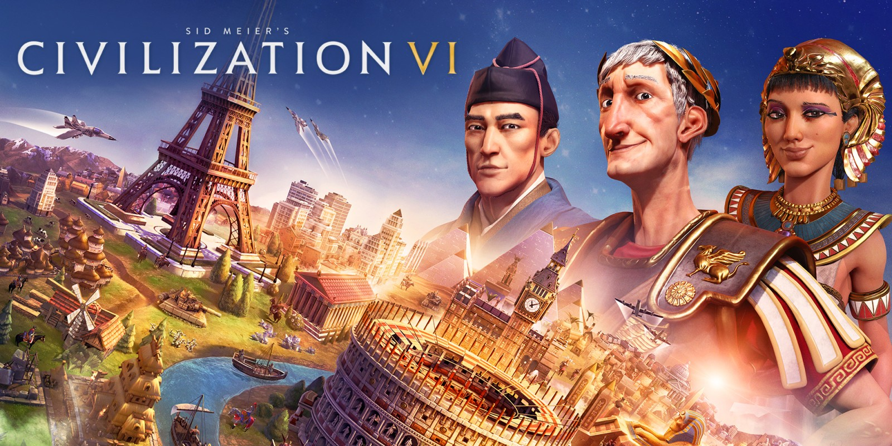
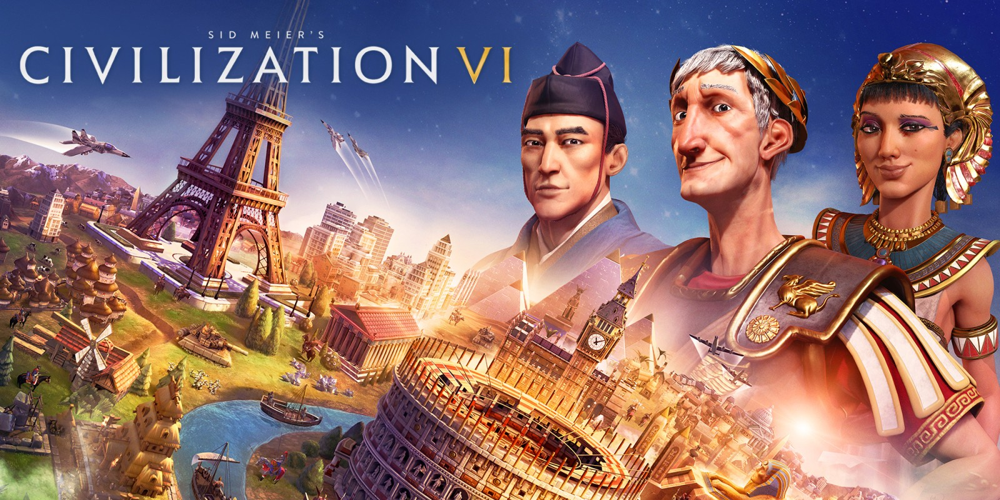
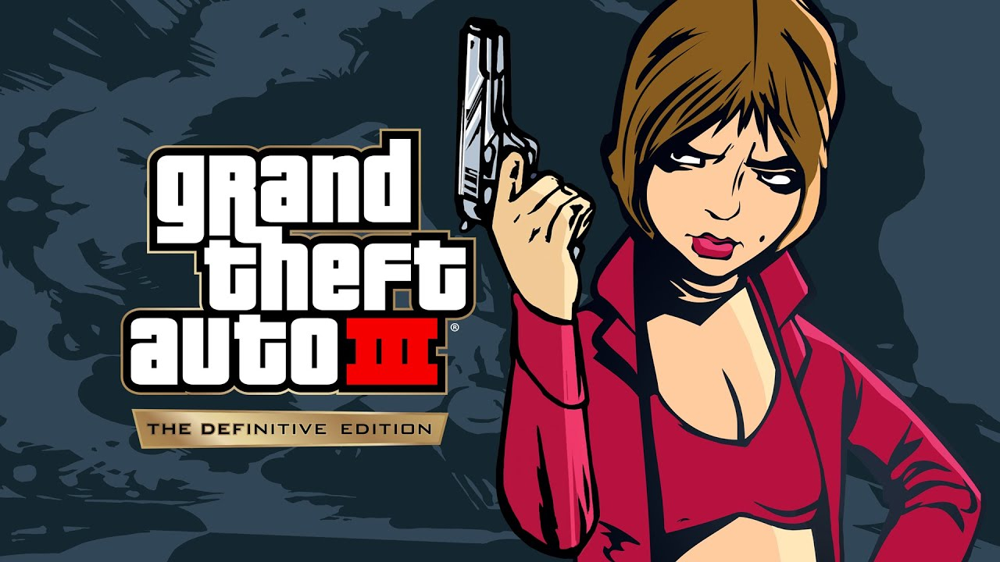
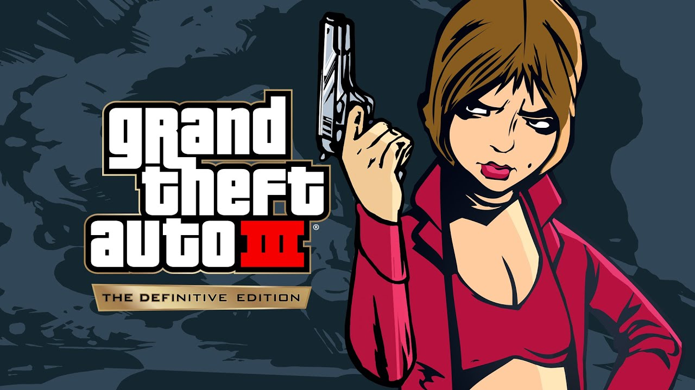

| Década | Evento |
|---|---|
| 1940s y 1950s | Desarrollo de los primeros juegos electrónicos |
| 1960s | Desarrollo de juegos en consolas de televisión y el primer juego en un ordenador mainframe |
| 1970s | Lanzamiento del primer juego en arcade por Atari y el lanzamiento de "Pong" |
| 1980s | Auge en la popularidad de los juegos en consolas de hogar y la aparición de juegos clásicos |
| 1990s | Lanzamiento de consolas de videojuegos de 16 bits y creación de juegos clásicos |
| 2000s y 2010s | Era de las consolas de videojuegos de 32 bits y 64 bits, aparición de juegos en línea y juegos móviles |
La historia de los videojuegos se remonta a los primeros días de la computación y ha evolucionado rápidamente a lo largo de los años para convertirse en una industria en constante crecimiento y desarrollo. En la tabla superior podemos ver un resumen rápido de la historia de los videojuegos desde su origen, que explicaremos más a fondo a continuación:
En 1940, el científico británico Alan Turing concibió el concepto de una máquina capaz de jugar juegos. En 1950, el matemático y ingeniero electrónico americano William Higinbotham creó el primer videojuego de la historia, llamado "Tennis for Two".
La década de 1970 fue una época de explosion para los videojuegos, con la aparición de los primeros juegos de arcade como "Computer Space" y "Pong". Estos juegos, basados en monedas, pronto se convirtieron en una sensación en todo el mundo y popularizaron aún más la industria de los videojuegos.
La década de los 80-90 es considerada como la "Edad de Oro" de los videojuegos por una serie de factores. En primer lugar, fue en esta década cuando surgieron las primeras consolas de videojuegos como Atari y Nintendo, lo que impulsó la popularidad de los videojuegos. Además, en esta época también se lanzaron algunos de los videojuegos más emblemáticos y reconocidos de todos los tiempos, como Super Mario Bros y The Legend of Zelda, que sentaron las bases para los géneros de plataformas y aventura.
Otro factor que contribuyó a la popularidad de los videojuegos en esta década fue la evolución tecnológica que permitió gráficos y sonidos más elaborados y una experiencia de juego más inmersiva. Finalmente, la década de los 80-90 también vio un crecimiento en la comunidad de jugadores y una mayor aceptación social de los videojuegos, lo que ayudó a establecerlos como un medio de entretenimiento popular y a largo plazo.
En esta época también aparecieron otros juegos míticos comoTambién fue durante esta década cuando aparecieron algunos de los juegos más emblemáticos de la historia, como "Pac-Man", "Space Invaders" y "Donkey Kong".
La década de 1990 vio el surgimiento de las consolas de sobremesa, como la Super Nintendo Entertainment System (SNES) y la Sega Genesis. Esto llevó a un aumento en la calidad gráfica y la complejidad de los juegos, así como a una mayor variedad de géneros de juegos, incluyendo juegos de rol y de aventuras gráficas.

La era actual de los videojuegos es caracterizada por el surgimiento de los juegos en línea y los servicios en la nube. Las consolas modernas, como PlayStation 5 y Xbox Series X, ofrecen experiencias de juego más realistas y de alta calidad, y los juegos en línea permiten a los usuarios en todo el mundo jugar mediante internet, en una misma partida. Los juegos en línea también desencadenaron el surgimiento de los E-Sports, que llevan el juego a un nivel competitivo.

Los videojuegos abarcan una amplia variedad de géneros, cada uno con su propio estilo de juego y objetivos. Algunos de los géneros más populares incluyen:

 

Las compañías de consolas más populares en la actualidad son Nintendo, Microsoft (Xbox) y Sony (PlayStation). Sin embargo, el top de consolas más vendidas de la historia está dominado por Sony y Nintendo, siendo las más vendidas:


Páginas oficiales de las compañías:
Aquí puede hacer una lista de los videojuegos que considera los mejores de todos los tiempos y brindar una breve descripción de cada uno de ellos.
A lo largo de los años, muchos videojuegos han impactado de manera significativa en la industria y han sido considerados como clásicos por la crítica y los jugadores. Vamos a mencionar algunos de ellos:

 
